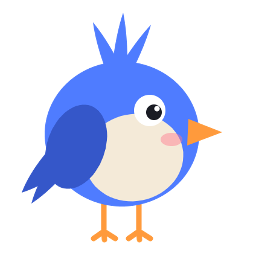

Casa é onde você soltou o pet por último: arraste para mudar.
Conectar adiciona só os hooks do perch no ~/.claude/settings.json (o resto do arquivo fica igual) e faz um backup antes. Sessões do Claude já abertas passam a avisar o pet na próxima sessão.
Daemon:
Qualquer script pode chamar o pet (comemorar, chamar atenção, dar oi):